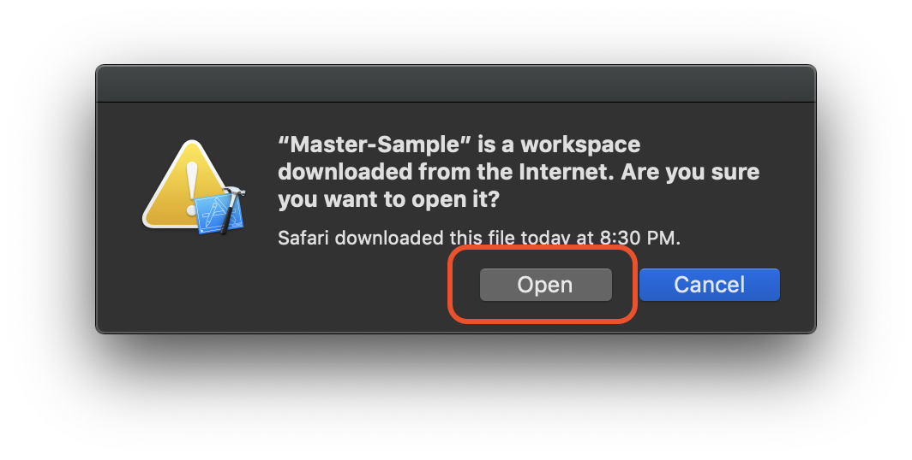
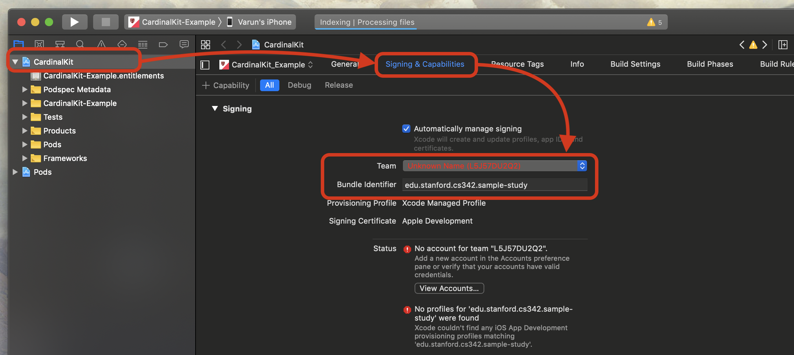
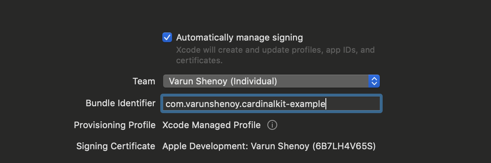
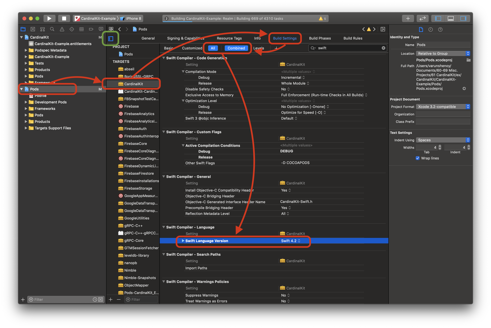

Generate CardinalKit App
Thanks for choosing CardinalKit! CardinalKit minimizes your research costs and time required to survey individuals by providing your team with a system that automatically takes care of building an app and storing data. You don't even need to know how to code. The goal of this guide is to get your cloud-enabled research app up and running with minimal effort on your part.
Prior to creating a CardinalKit project, you will need to have access to a computer running MacOS.
Create a CardinalKit project
It's really easy to get started with CardinalKit. This guide will help you set up our example app in under 30 minutes.
1. Install Xcode
iOS apps are natively built in Xcode, an app available on the Apple Mac App Store. Download the most recent version of Xcode available, if you have not already. You can check your version of Xcode by [..]. You need to have Xcode Version [...] in order to run CardinalKit.
2. Download the CardinalKit Template Project
Our open-source project is available on Github. Download it by clicking "Clone or Download" > "Download Zip".

If that doesn't work, click here to download the file directly.
3. Open the Project
Open the folder once it is finished downloading. Navigate to the "CardinalKit.xcworkspace" file located in the "CardinalKit-Example" folder within the download. You should see something like this. Open the "CardinalKit.xcworkspace" file. Xcode should automatically launch with the project open. This is a sample app that you will customize to meet your needs.

If a pop-up indicating that you opened a file downloaded from online appears, select "Open".

4. Configure the Project
Click on the main root project in the sidebar and change the iOS bundle ID and team to match your project. Remember the bundle ID for later since it will be needed to connect your database to the app. It should be of the form "com.[TEAM-NAME].[PROJECT-NAME]".

Once that is complete, your "Signing and Capabilities" page should look like this (with your team and project names):

Finally, we need to set our app to use Swift 4.2. Select "Pods" (in the left hand sidebar) > "CardinalKit" (tucked away in a drawer indicated by the green box) > "Build Settings" > "Swift Compiler Language" > "Swift Language Version" > "Swift 4.2". This process is illustrated below.

5. Run the Project
Xcode takes a while to open a project. Wait until Xcode is finished indexing the project. At the top of Xcode, there will be light blue progress bar showing this. Once it is complete, and no red errors pop up, we can run the project. This can take anywhere from 5 to 10 minutes.

6. Test app to see if it works
Specify the target for deployment. Select either your phone (if it is plugged in) or pick a device to simulate (we recommend iPhone 8). Press the "Play" button, shown in green below to run the app in the simulator. The first time you build the app, it will take 5 to 10 minutes due to it having to load all of the frameworks for the first time.